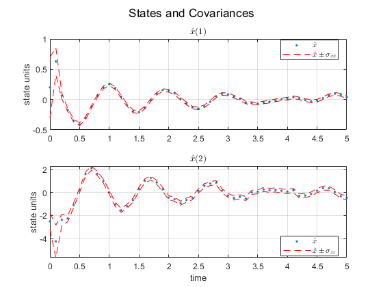

Contents
problem set-up
clear; clc; close all
kf_example02a;
KALMAN FILTER
Gk = Gammak;
[xhat_arr, Pxx_arr, Pzz_arr, P_cell] = kf( ...
xhat0, P0, zhist, Fk, Gk, Qk, Hk, Rk );
results
thist0 = [ 0; thist ];
ftitle = 'States and Covariances';
figure('name', ftitle);
subplot(2,1,1)
plot( thist0, xhat_arr(:,1), '.' ); hold on; grid on;
plot( thist0, xhat_arr(:,1) + sqrt( Pxx_arr ), 'r--');
plot( thist0, xhat_arr(:,1) - sqrt( Pxx_arr ), 'r--');
title('$\hat{x}$(1)', 'interpreter', 'latex');
legend('$\hat{x}$', '$ \hat{x} \pm \sigma_{xx}$', 'interpreter', 'latex', 'location', 'best');
ylabel('state units');
subplot(2,1,2)
plot( thist0, xhat_arr(:,2), '.' ); hold on; grid on;
plot( thist0, xhat_arr(:,2) + sqrt( Pzz_arr ), 'r--');
plot( thist0, xhat_arr(:,2) - sqrt( Pzz_arr ), 'r--');
title('$\hat{x}$(2)', 'interpreter', 'latex');
legend('$\hat{x}$', '$ \hat{x} \pm \sigma_{zz}$', 'interpreter', 'latex', 'location', 'best');
ylabel('state units');
xlabel('time');
sgtitle(ftitle);
disp('xhat(50) =')
disp(xhat_arr(end,:))
disp('P(50) =')
disp(P_cell{end})
xhat(50) =
0.040359 -0.45508
P(50) =
0.00047006 0.00027759
0.00027759 0.031117

subfunctions KALMAN FILTER
function [xhat_arr, Pxx_arr, Pzz_arr, P_cell] = kf( ...
xhat0, P0, zhist, Fk, Gk, Qk, Hk, Rk )
xhat = xhat0;
P = P0;
xbar_arr = [];
Pbar_arr = [];
xhat_arr = [xhat'];
P_cell = {P};
Pxx_arr = [P(1,1)];
Pzz_arr = [P(2,2)];
for k = 0 : length(zhist)-1
xbar = Fk * xhat;
Pbar = Fk * P * Fk' + Gk * Qk * Gk';
v = zhist(k+1) - Hk * xbar;
S = Hk * Pbar * Hk' + Rk;
W = Pbar * Hk' * inv(S);
xhat = xbar + W * v;
P = Pbar - W * S * W';
k = k + 1;
xbar_arr = [xbar_arr; xbar'];
Pbar_arr = [Pbar_arr; Pbar];
xhat_arr = [xhat_arr; xhat'];
P_cell = {P_cell; P};
Pxx_arr = [Pxx_arr; P(1,1)];
Pzz_arr = [Pzz_arr; P(2,2)];
end
end